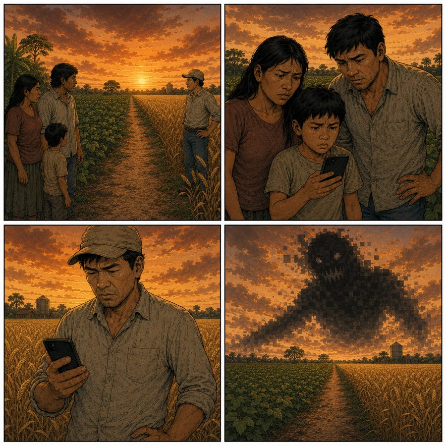
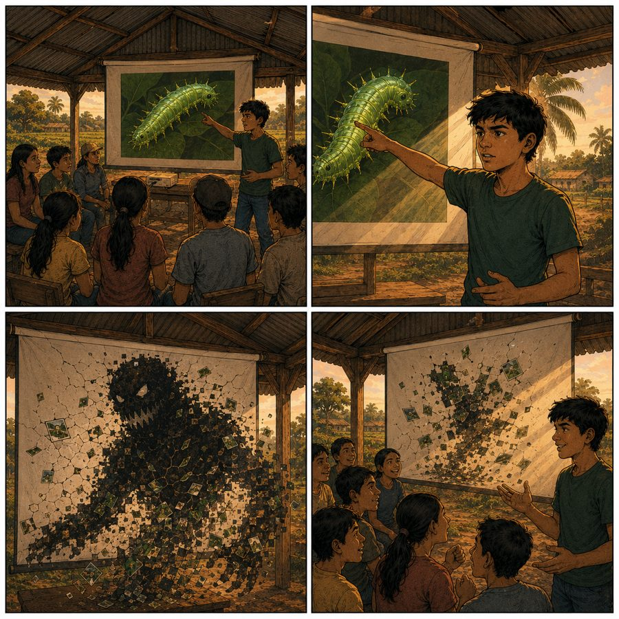
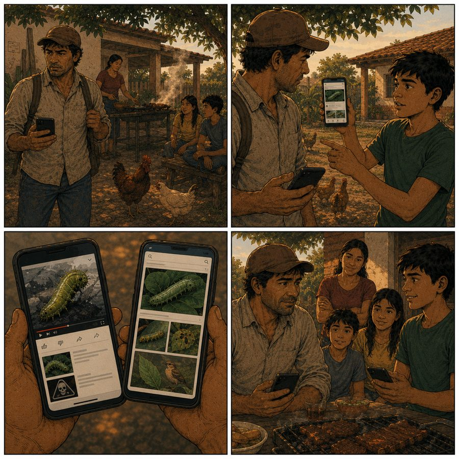
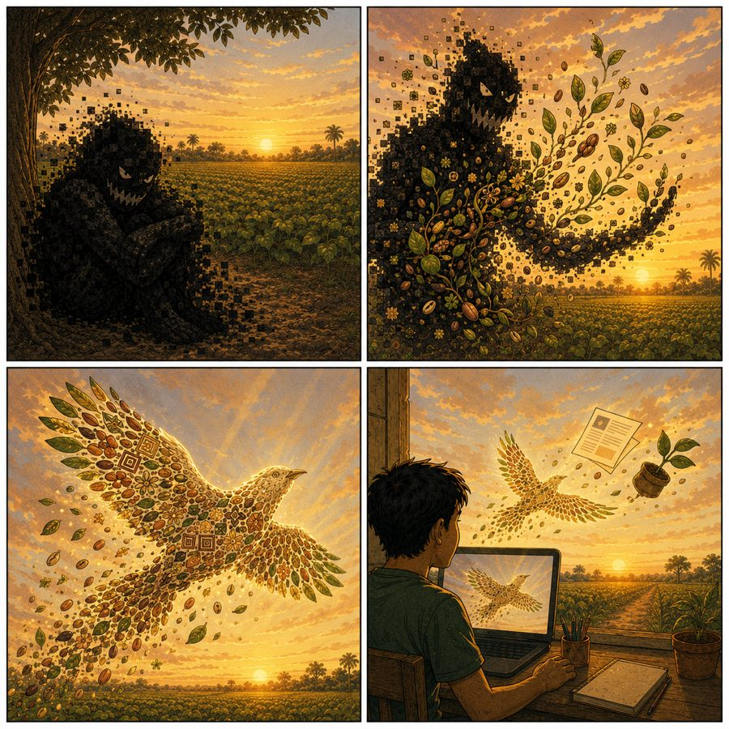

Japu Ã: el monstruo que llegó en una imagen
1. Introducción: el gusano que no existía
La primera vez que un agricultor de Okinawa Uno me mostró en su celular la fotografía de un gusano que no existía, entendí que la guerra del campo ya no se libra solamente contra la sequía, la helada o la plaga: se libra contra una imagen. Era una imagen perfecta, demasiado perfecta: una oruga de colores imposibles devorando una hoja de soya, con un texto urgente que ordenaba triplicar la dosis de veneno "antes de que sea tarde". Nadie sabía quién la había hecho. Nadie preguntó. Y esa misma semana varias familias quemaron sus tierras con sobredosis de agroquímicos persiguiendo a un enemigo que jamás estuvo en sus campos.
Aquella oruga la había fabricado una inteligencia artificial. No tenía patas reales, pero igual caminó sobre la economía de decenas de familias campesinas. Y mientras la veía ampliada en la pantalla rajada de un teléfono, comprendí que el municipio donde íbamos a trabajar no necesitaba más información: necesitaba aprender a defenderse del exceso de información falsa con apariencia de verdad. Ese fue el verdadero punto de partida de Gengo Academy en Okinawa Uno.
Este ensayo nace de allí, de un municipio rural del oriente boliviano donde la inteligencia artificial llegó (como casi siempre llega a las ruralidades) no por la puerta de la oportunidad, sino por la ventana de la desinformación. Pero no es un ensayo sobre el miedo. Es la historia de cómo un grupo de adolescentes campesinos le pusieron nombre al monstruo, lo desenmascararon, y descubrieron al final que el villano que les robaba la verdad podía convertirse en el héroe que llevaría su voz al mundo. Para contarla voy a alternar dos lenguajes: la viñeta, porque así, como una historieta, fue como los jóvenes entendieron y enseñaron lo que vivían, y mi propia voz de educador, la del que llegó a enseñar y terminó aprendiendo que en el campo la batalla por la tierra empieza hoy por la batalla por la imagen.
Yo, soy simplemente el educador que tuvo el privilegio de acompañar, durante dieciocho meses, a jóvenes de ascendencia guaraní, quechua y ayorea, y a jóvenes de la comunidad nikkei (cruceños descendientes de aquellos migrantes japoneses que llegaron a sembrar estos suelos después de la Segunda Guerra Mundial). Las historias son de ellos; yo solo aprendí a ordenarlas. Y para nombrar al monstruo, ellos eligieron su propia lengua.
Conviene entender una cosa para medir el tamaño del problema: la generación de agricultores con la que trabajamos es la primera de la historia de su municipio que tuvo un teléfono inteligente en la mano. No hubo una transición. No hubo una década de computadoras de escritorio, ni un aprendizaje gradual de cómo funciona internet, ni una escuela que enseñara a leer una pantalla con la misma desconfianza con que se aprende a leer el cielo antes de una tormenta. De un año al otro, una población acostumbrada a que la palabra tenga el peso de quien la dice de frente (la palabra del vecino, del abuelo, del dirigente) se encontró recibiendo cientos de mensajes diarios de fuentes sin rostro, sin origen y sin responsabilidad. La oralidad, que en estas comunidades es un sistema riguroso de verificación (uno sabe quién dijo qué, y quién responde por ello), chocó de golpe con un torrente digital donde nadie responde por nada. En ese hueco, en esa grieta entre una cultura de la palabra responsable y una tecnología de la palabra anónima, fue donde se metió el monstruo. Y conviene dar una cifra que mide ese vértigo: según el Censo 2024, los hogares rurales de Bolivia con acceso a internet pasaron del 0,7% en 2012 al 53,9% en 2024, un salto enorme que llegó de golpe, sin que ninguna escuela alcanzara a enseñar a habitar esa conexión.
2. La aparición del villano
En los talleres, los jóvenes le pusieron un nombre guaraní a la desinformación que viajaba en imágenes falsas. La llamaron Japu à (la Imagen Mentirosa, la figura del engaño), porque entendieron antes que muchos adultos que el peligro no era el celular, sino la mentira que se disfrazaba de fotografía. Así empezó la historieta que ellos mismos dibujaron en sus cuadernos, y que aquí reproduzco escena por escena.

Lo que muestra la viñeta: Atardecer sobre un mar de soya. En primer plano, un celular muestra una oruga monstruosa y fosforescente sobre una hoja. Detrás, un agricultor preocupado y su hijo adolescente. El humo de un campo fumigado se eleva al fondo.
JAPU Ã: (desde la pantalla, con voz de mil reenvíos) Soy la prueba, don Faustino. Mírame: esta plaga viene por tu cosecha. Échale el triple. Échale hoy.
DON FAUSTINO: Si está en la foto, será cierto. Mañana mismo le pongo todo lo que tengo.
KEVIN: Pa… esa hoja no es de aquí. Y a ese gusano le sobran patas. Lo aprendí en el taller del sábado.
DON FAUSTINO: Vos a tus estudios, Kevin. Del campo sé yo.
Tres días después, el campo de don Faustino amaneció amarillo. No por la plaga: por el veneno. Japu à había ganado su primera batalla, y la ganó en el lugar más íntimo de la comunidad: la confianza entre un padre y aquello que ve con sus propios ojos. Cuando una imagen falsa logra que un hombre desconfíe de su hijo y confíe en un desconocido sin rostro, la desinformación dejó de ser un problema técnico para volverse una herida social.
3. El diagnóstico: cómo la inteligencia artificial siembra desinformación en el campo
Cuando aterricé en Okinawa Uno con el equipo de Gengo, mi hipótesis era la misma de casi todos los programas de tecnología rural: que el problema del campo era la falta de información. Me equivoqué de raíz. El problema ya no era el silencio, sino el ruido: una manguera abierta de contenido falso que ni la escuela, ni el Estado, ni la familia habían enseñado a cerrar. Por primera vez en la historia del municipio, miles de personas tenían un teléfono inteligente en la mano y, con él, acceso ilimitado a una fábrica de imágenes que muestran exactamente el miedo que uno quiere ver confirmado.
La inteligencia artificial no fue la causa de todo, pero fue el acelerador perfecto. Las imágenes sintéticas son baratas, instantáneas y emocionalmente impecables. En los dieciocho meses de trabajo documentamos, junto a los propios jóvenes, una verdadera fauna de fenómenos que la IA estaba provocando en las ruralidades de la zona:
- El falso agrónomo. Imágenes, audios y videos generados que imitan a técnicos o autoridades recomendando dosis equivocadas de agroquímicos, calendarios de siembra errados o "remedios milagrosos" que arruinan suelos y cosechas.
- La plaga fantasma. Fotografías de plagas, hongos o "cultivos contaminados" que no existen, capaces de desatar histeria colectiva, ventas de pánico y la destrucción preventiva de cosechas sanas.
- El precio inventado. Capturas falsas de precios de mercado que empujan a las familias a vender barato por miedo o a guardar de más por codicia, descalabrando la economía de quien menos margen tiene para perder.
- El clima trucado. Pronósticos y alertas apócrifas (lluvias, heladas, sequías que nunca llegan) que paralizan o precipitan la siembra. En nuestra línea de base, el 62% del contenido climático que circulaba en la zona contenía información inexacta, y el 70% se reenviaba sin ninguna verificación, según la línea de base levantada por el proyecto en la zona.
- El rumor del despojo. Imágenes manipuladas sobre supuestas tomas de tierras, desalojos o conflictos vecinales que encienden el pánico territorial en comunidades cuya herida histórica es, precisamente, la tierra.
- La estafa con rostro. Engaños financieros y sentimentales potenciados por IA que vacían los ahorros de familias enteras, apuntando muchas veces a las personas mayores.
- La voz robada. Audios y videos falsificados que ponen en boca de una autoridad municipal, de un dirigente o de un técnico palabras que nunca dijo, erosionando lo más frágil y más valioso de una comunidad rural: la confianza en quienes la representan. Vimos cómo un solo audio trucado podía sembrar semanas de sospecha entre vecinos.
- El espejismo monolingüe. Asistentes y buscadores que responden solo en español, sobre realidades guaraníes y de la agricultura local que no comprenden, administrando la cultura del territorio (como advierte la propia convocatoria del IPDRS) "fuera de contexto y sin la memoria territorial viva".
Cada uno de estos fenómenos tiene un rostro concreto en mi memoria. Recuerdo a una familia que estuvo a punto de vender su parcela tras ver circular una imagen falsa de un supuesto "plan de reordenamiento" que nunca existió. Recuerdo a una señora mayor que entregó sus ahorros a una voz de mujer, generada por computadora, que la llamaba "hija" y le prometía un premio. Recuerdo a un grupo de productores comprando, todos el mismo día, un fertilizante inútil que un video falso había convertido en milagro. Ninguna de estas personas era ingenua; todas eran trabajadoras, prudentes, curtidas por la vida. Lo que les faltaba no era inteligencia: era una herramienta tan nueva que nadie se las había dado, la herramienta de dudar de una pantalla.
Lo que estos fenómenos tienen en común no es la tecnología que los produce, sino la emoción que los propaga. La desinformación no se difunde porque la gente sea ingenua: se difunde porque está diseñada para secuestrar el miedo, la urgencia y el amor por los propios. Un padre que reenvía la foto de la "plaga fantasma" a su grupo de productores no está siendo tonto; está siendo responsable según la única lógica que conoce: avisar a los suyos de un peligro. El algoritmo lo sabe, y por eso premia lo que más nos altera. En el campo, donde cada cosecha es el resultado de un año entero de trabajo y de deuda, el costo de equivocarse es altísimo, y esa altísima apuesta es precisamente la palanca que la mentira aprovecha. La desinformación rural no es un problema de inteligencia: es un problema de poder, de quién tiene las herramientas para dudar y quién no.
Y conviene decirlo sin rodeos: el campo es un blanco perfecto. Reúne, para quien fabrica engaños, todas las condiciones ideales. Hay una confianza comunitaria muy alta (si lo manda un conocido, será cierto), que los estafadores explotan disfrazándose de vecino. Hay una llegada reciente y masiva a la tecnología, sin la cicatriz de años de estafas que vacunan al usuario urbano. Hay decisiones económicas grandes y urgentes (qué sembrar, cuándo vender, qué insumo comprar) donde un empujón falso rinde mucho dinero. Y hay, sobre todo, una ausencia casi total de instituciones que verifiquen: ni medios locales fuertes, ni programas escolares de alfabetización digital, ni campañas públicas pensadas para el contexto rural. La ciudad, con todos sus defectos, tiene anticuerpos; el campo fue dejado sin ellos. Por eso entender la desinformación rural como una simple "falta de educación" es injusto y, además, inútil. No es que la gente del campo crea más mentiras: es que recibe más mentiras dirigidas y cuenta con menos defensas instaladas. Reparar esa desigualdad (no regañar a las víctimas) fue el verdadero encargo del proyecto.
Detrás de cada uno de estos fenómenos latía una misma pregunta, la que organiza el debate de esta época: ¿quién controla los datos con los que se entrena a la máquina que hoy le habla al campo? Una inteligencia artificial entrenada lejos del territorio, en otro idioma y con otros intereses, no es un oráculo neutral: es un espejo que devuelve la mirada de quien lo fabricó. Y cuando ese espejo se cuelga en la pared de una comunidad que nunca fue consultada, lo que refleja no es la vida rural: es su caricatura. Aquí no hablamos de un debate abstracto sobre algoritmos; hablamos del derecho concreto de una familia campesina a una información veraz, que en el campo es (literalmente) el derecho a no perder la cosecha, el ahorro y la paz. La Declaración de las Naciones Unidas sobre los Derechos de los Campesinos lo reconoce de forma explícita: el derecho a acceder a información veraz y a participar en las decisiones que afectan la vida en el campo no es una concesión, es un derecho humano. En tiempos de inteligencia artificial, defender ese derecho significa defender también el derecho a entender (y, llegado el caso, a desobedecer) a la máquina que pretende decidir por uno.
4. Las dos orillas: el monstruo que cruzó el camino
Okinawa Uno tiene una particularidad que lo vuelve un laboratorio único de Sudamérica. En este municipio rural de unos diez mil quinientos habitantes conviven dos memorias que rara vez se cuentan juntas: la de las familias de ascendencia indígena (guaraní, quechua, ayorea) y la de la colonia nikkei, descendientes de migrantes japoneses que llegaron a transformar el monte en uno de los corazones agrícolas del país, al punto de que Okinawa es hoy conocida como la Capital Triguera de Bolivia. Dos raíces, dos lenguas, un mismo suelo. Japu à no respetó ninguna frontera.

Lo que muestra la viñeta: Un camino de tierra divide la escena. A la izquierda, la chacra de una familia de ascendencia guaraní; a la derecha, la de un agricultor nikkei. Ambos miran el mismo mensaje falso en sus teléfonos. Arriba, la sombra de Japu à se extiende sobre los dos campos por igual.
DON AKIRA: Kevin, a mí también me llegó una foto. Dice que el río está envenenado, que no use el agua. Mi abuelo cruzó el mundo para sembrar aquí, y yo no sé si creerle a una pantalla.
KEVIN: ¿Y le preguntó a la foto quién la hizo, don Akira?
DON AKIRA: (en silencio) …No. A las fotos nunca se les pregunta.
KEVIN: Eso es lo que estamos cambiando, don Akira. Ahora a las fotos se les pregunta.
Para entender por qué esa imagen de las dos orillas es tan poderosa, hay que conocer la historia de este suelo. La colonia Okinawa nació a mediados de los años cincuenta, cuando cientos de familias provenientes de una Okinawa devastada por la Segunda Guerra Mundial cruzaron medio planeta para empezar de cero en el monte cruceño. Llegaron a una tierra que no era la suya, enfermaron de paludismo, enterraron a sus muertos y, contra todo pronóstico, transformaron la selva en campos de trigo y soya hasta convertir a Okinawa en uno de los motores agrícolas de Bolivia. En el mismo territorio, y desde mucho antes, vivían y trabajaban familias de ascendencia guaraní, junto a migrantes quechuas que bajaron del altiplano y los valles buscando tierra, y familias de raíz ayorea. Okinawa Uno es, por eso, un mosaico improbable: un lugar donde la memoria de los pueblos originarios del oriente y la memoria de una diáspora del otro lado del mundo cultivan, codo a codo, el mismo grano.
Socialmente, sin embargo, esas memorias suelen vivir separadas: comparten la economía agrícola (el acopio de granos, los comercios, los caminos), pero cada comunidad mantiene sus propias fiestas, su propia lengua, su propio recuerdo. Por eso lo que ocurrió en Gengo tiene un valor que excede a la tecnología. Aquel diálogo entre Kevin y don Akira, que parece menor, encierra una lección que el mundo rural conoce en la piel: la desinformación algorítmica golpea por igual a la familia de raíz indígena y a la familia migrante, pero golpea más fuerte a quienes nunca recibieron herramientas para defenderse. Don Akira lo dijo después con una frase que no he podido olvidar: "Mi abuelo cruzó el mundo para sembrar aquí. Con tanta mentira digital, yo sentía que nos quitaban el suelo de nuevo. Aprender esto fue volver a sembrar". El proyecto logró algo que en el municipio parecía improbable: que jóvenes de ambas culturas se sentaran a la misma mesa a desarmar los mismos miedos. La mentira los amenazaba por igual; aprender a desmontarla los hermanó.
5. Por qué los jóvenes: los semilleros del cambio
Aquí tomé la decisión más importante del proyecto, y fue una decisión contraintuitiva. Toda la lógica del desarrollo rural diría que hay que capacitar primero a los adultos, a los jefes de familia, a quienes toman las decisiones productivas. Pero los datos del terreno decían otra cosa: eran justamente los padres y las madres (con menos años de escuela y ninguna alfabetización digital) quienes más caían en la imagen mentirosa. Pedirles que desconfiaran de su propio celular era pedirles que desconfiaran de la única ventana al mundo que acababan de recibir.
Entonces invertimos la pirámide. En lugar de enseñar de arriba hacia abajo, sembramos de abajo hacia arriba. Convertimos a los adolescentes en semilleros del cambio: jóvenes capacitados para detectar la desinformación y, sobre todo, para enseñarles a sus propios padres y hermanos menores. La autoridad pedagógica más poderosa de una comunidad no es el técnico que llega de la ciudad: es el hijo que le explica a su padre, en su propia lengua y en su propia mesa, por qué esa foto es mentira. A eso lo llamamos mentoría inversa, y fue el corazón de Gengo.
Esta decisión tenía además una justicia generacional que no quiero pasar por alto. En el campo, la migración se lleva a los jóvenes: se van a la ciudad porque sienten que su tierra no tiene nada que ofrecerles, y con ellos se va el futuro de la comunidad. Al colocar a los adolescentes en el centro (no como receptores pasivos de una capacitación, sino como protagonistas que enseñan, que corrigen, que aportan algo que sus mayores no tienen) el proyecto les devolvió una razón para quedarse, o al menos para volver. Un joven que descubre que su conocimiento es necesario en su propia casa empieza a mirar su comunidad con otros ojos: ya no como el lugar del que hay que escapar, sino como el lugar al que vale la pena traer lo que se aprende. La media literacy, que parecía un asunto de pantallas, terminó siendo también una política contra el desarraigo. Y los mayores, lejos de resentir que sus hijos les enseñaran, encontraron en ese aprendizaje una forma nueva de orgullo: el orgullo de haber criado a quienes ahora protegen a la familia de un peligro que ellos no sabían nombrar.
El motor humano de esa estrategia fue un equipo de quince jóvenes voluntarios de la propia zona, varios de ellos universitarios que regresaban a la comunidad los fines de semana. No los formamos como técnicos en informática, sino como algo más raro y más valioso: traductores culturales. Su talento consistía en tomar los conceptos más complejos de la inteligencia artificial y explicarlos con analogías del campo. Cuando un padre no entendía qué era un algoritmo, un voluntario le decía: "El algoritmo es como el cauce del agua: fluye hacia donde ya hiciste un surco". Y de pronto, un productor que jamás había oído la palabra "algoritmo" entendía perfectamente por qué su teléfono le mostraba una y otra vez aquello que más lo asustaba. Esa traducción (de la lógica de la máquina a la lógica de la tierra) fue la primera victoria pedagógica del proyecto.
Que esos quince traductores fueran de la propia zona lo cambió todo. Un facilitador que llega de la ciudad, por más capacitado que esté, carga con una desventaja insalvable: no comparte el mundo de quienes intenta enseñar, y en el campo eso se nota a la primera frase. Nuestros voluntarios, en cambio, conocían los apodos, las cosechas, los caminos y los miedos; habían crecido escuchando las mismas radios y temiendo las mismas sequías. Cuando uno de ellos explicaba cómo funciona un deepfake, no lo hacía desde un manual, sino desde la vida: comparaba la imagen falsa con el cuento del lobo, con la copla que exagera, con el chisme de feria que crece de boca en boca. Esa cercanía hizo que el conocimiento no se sintiera como una imposición de afuera, sino como un saber que la comunidad ya tenía y que solo necesitaba una forma nueva de nombrarse. Formar formadores locales no fue una estrategia de bajo costo: fue una decisión política sobre quién tiene derecho a enseñarle al campo.
Trabajar con menores nos impuso, además, una ética estricta que ha guiado incluso la escritura de este ensayo: todos los nombres que aparecen aquí van sin apellido, justamente para proteger la identidad de los niños y jóvenes que participaron. Los nombres de pila son reales; las personas, también. Solo se reserva aquello que podría identificarlas.
6. La respuesta, primera raíz: alfabetización mediática contra Japu Ã
La columna vertebral de Gengo fue enseñar a verificar. No a memorizar, no a desconfiar de todo, sino a verificar: una destreza tan concreta como aprender a leer el cielo antes de sembrar. Adoptamos un método sencillo y probado, el método SIFT (por sus siglas en inglés: Stop, Investigate, Find better coverage, Trace), y lo tradujimos a la vida del campo:
- Detenerse (Stop). Antes de reenviar nada, parar. La desinformación viaja sobre la urgencia; el primer acto de soberanía es no apurarse.
- Investigar la fuente (Investigate). Salir de WhatsApp y abrir el navegador para ver quién está detrás del mensaje, lo que llamamos "lectura lateral": no leer hacia adentro de la mentira, sino hacia los lados, contrastándola con el mundo.
- Buscar mejor cobertura (Find better coverage). Preguntarse si una fuente confiable dice lo mismo, o si la "noticia" solo existe en una cadena de reenvíos.
- Rastrear el origen (Trace). Devolver la imagen, el dato o la cita hasta su primera aparición. Aquí la herramienta estrella fue la búsqueda inversa de imágenes con Google Lens o TinEye, que nos permitió demostrar, una y otra vez, que la "plaga boliviana" de la foto era en realidad una fotografía tomada en la India, o que el "video del precio" venía de un estafador en otro país.
A esas cuatro llaves técnicas les sumamos tres preguntas que cualquiera puede hacerse, sin saber nada de tecnología, y que se volvieron el catecismo laico del proyecto: ¿Quién creó esto? ¿Cuál es su ganancia al asustarme? ¿Qué siente mi cuerpo cuando lo leo, miedo, urgencia, rabia? Porque descubrimos que la desinformación no entra por la cabeza: entra por las vísceras. Quien aprende a notar el tirón del miedo en el pecho aprende, en el mismo movimiento, a no obedecerlo.
Todo esto se organizó en un currículo de tres módulos, pensados para caminar de la sospecha a la creación:
- Módulo 1, La huella de la mentira: cómo identificar imágenes falsas, deepfakes y montajes; las marcas que delatan a lo sintético.
- Módulo 2, La anatomía del engaño: cómo el miedo nos convierte en repartidores involuntarios de la mentira, y cómo cortar esa cadena en nosotros mismos.
- Módulo 3, Nuestra propia voz: cómo usar las herramientas digitales no solo para defenderse, sino para contar la verdad del campo con voz propia.
Para que se entienda cómo funcionaba esto en la práctica, vale la pena reconstruir el desarme de una sola mentira, la de la oruga falsa que abrió este ensayo. Primero, detenerse: en lugar de reenviar la foto, un joven la guardó. Segundo, investigar: notó que el texto venía sin fecha, sin lugar y sin firma, tres ausencias que en periodismo son una alarma roja. Tercero, buscar mejor cobertura: ninguna fuente agrícola seria, ni el municipio, ni los técnicos de la zona mencionaban semejante plaga; la "noticia" solo existía en la cadena de reenvíos. Y cuarto, rastrear: al pasar la imagen por una búsqueda inversa, apareció el origen real: era una fotografía manipulada a partir de una imagen tomada en otro continente, reciclada para asustar y vender. En menos de diez minutos, sin ser técnico ni periodista, un adolescente había convertido una verdad incuestionable en una mentira comprobada. Esa experiencia (la de descubrir, con las propias manos, que algo que parecía sagrado era falso) transformaba a cada joven más que cualquier discurso. La primera vez que uno desenmascara a Japu Ã, ya no le vuelve a tener el mismo miedo.
El método tuvo dos piernas que caminaron juntas, porque en una ruralidad de conectividad intermitente (donde hay buen 4G en la plaza de Okinawa, pero en las chacras hay que salir al patio, pararse bajo el tinglado o subir a una loma para que salga un mensaje) una sola pierna no sostiene nada. La primera pierna fue la presencialidad: nos reuníamos cada dos semanas en los tinglados de las escuelas, bajo el techo de calamina y el calor cruceño, y esa cercanía física fue la que tejió la confianza que ninguna pantalla teje. La segunda fue el acompañamiento virtual diario: grupos de WhatsApp moderados por los facilitadores, donde la verificación ocurría en tiempo real. Si a un padre le llegaba un rumor un martes a las seis de la mañana, su hijo lo lanzaba al grupo y, entre todos, lo desmentíamos antes del mediodía. La alfabetización mediática dejó de ser una clase y se volvió un reflejo comunitario.
7. La plataforma Arakua Piau: del repositorio de mentiras al pasaporte al mundo
El corazón digital del proyecto fue una plataforma educativa que los jóvenes bautizaron Arakua Piau ("saber nuevo", "la sabiduría que se renueva"), y que cumplió dos funciones que parecían opuestas pero eran la misma. Por un lado, funcionó como un repositorio comunitario de mentiras: los jóvenes subían capturas de pantalla de los mensajes falsos que les llegaban a sus padres por WhatsApp, y la plataforma ayudaba a analizar los patrones, a reconocer las mismas estafas reapareciendo con otra cara, a entender cómo respiraba el engaño en el territorio. Cada mentira archivada era una vacuna para la siguiente.
Por el otro lado (y aquí la historieta empieza a cambiar de género), en Arakua Piau cargábamos materiales y documentos para que, con ayuda de la inteligencia artificial, los jóvenes aprendieran a usar la máquina a su favor: a redactar su primer currículum, a traducir y pulir un ensayo, a transformar una frase tan humilde y tan enorme como "sé manejar un huerto" en el lenguaje institucional que abre las puertas de una beca, una pasantía o un programa en el extranjero. La misma tecnología que un año antes les quemaba las cosechas empezó a enseñarles a postular al mundo, aprender afuera y volver a aplicar ese conocimiento en su comunidad, llevando consigo la cultura guaraní y la herencia nikkei de Okinawa Uno. El monstruo que llegó a robar la verdad estaba a punto de aprender a cargar la voz.
Hay algo profundamente político en ese segundo uso de la plataforma, y quiero detenerme en ello porque es el núcleo de lo que entendemos por soberanía. Durante generaciones, el conocimiento del campo (saber leer una nube, calcular una siembra, sanar un animal, mantener viva una semilla) fue tratado por el mundo institucional como un saber de segunda, algo pintoresco que no cabía en un formulario de beca. La barrera nunca fue la falta de talento de los jóvenes rurales, sino la falta de traducción: nadie les había enseñado a nombrar su propia experiencia en el idioma que premian las instituciones. Lo que hicimos con la inteligencia artificial fue, justamente, devolverles esa traducción sin quitarles el contenido: que "sé manejar un huerto" se escribiera como "gestión de sistemas agroecológicos comunitarios" sin dejar de ser, en el fondo, el mismo huerto, el mismo saber, la misma raíz. La máquina no reemplazó su voz; les prestó un megáfono. Y un megáfono en manos de quien tiene algo verdadero que decir es exactamente lo contrario de la desinformación.
8. El entrenamiento del héroe
Si la desinformación tenía nombre guaraní, el discernimiento también debía tenerlo. Y la sabiduría nueva no reemplaza a la de los abuelos: se le suma. El saber ancestral de leer la tierra y el cielo, extendido ahora para leer también la pantalla. Esa fue la escena que más me marcó como educador: el día en que Kevin se sentó frente a la misma imagen del gusano que había arruinado la cosecha de su padre, pero esta vez armado.

Lo que muestra la viñeta: Un aula improvisada bajo el tinglado de calamina. Kevin, de pie frente a una pantalla que proyecta la oruga falsa, la señala con el dedo. El monstruo Japu à se encoge, descubierto, mostrando que por dentro está hecho de píxeles y de mentiras recicladas.
KEVIN: No te voy a creer todavía. Te voy a hacer las tres preguntas. Primera: ¿quién te hizo?
JAPU Ã: (retorciéndose) No preguntes eso…
KEVIN: Segunda: ¿qué ganás con asustarme? Tercera: ¿por qué mi cuerpo siente miedo apenas te veo?
JAPU Ã: (deshaciéndose) ¡Yo solo repito lo que me dieron de comer! ¡No invento nada, solo devuelvo!
KEVIN: Ahí está. No sos un demonio. Sos un eco. Alguien te llenó de mentiras y te soltó sin que nadie pudiera responderte.
Ese fue el giro que ni yo había anticipado. Al enseñar a los jóvenes a interrogar las imágenes, descubrimos juntos que la inteligencia artificial no era un villano con voluntad de hacer daño: era un espejo sin memoria, una fuerza que devolvía exactamente aquello con lo que había sido alimentada. Y esa revelación, lejos de tranquilizarnos, nos puso ante una responsabilidad mayor. Si el monstruo era un eco, entonces la pregunta dejaba de ser "¿cómo nos protegemos de la máquina?" y pasaba a ser "¿quién tiene derecho a llenarla de voces?". Un eco repite lo que le gritan; si en el valle solo gritan los que venden miedo, el eco devolverá miedo. Pero si en el valle empiezan a gritar también los jóvenes, en guaraní, contando la verdad de su huerto, el eco (tarde o temprano) tendrá que aprender a devolver eso. Entender a Japu à como un eco fue, paradójicamente, lo que les dio a los jóvenes el coraje de hablarle: nadie le teme a su propio reflejo una vez que entiende que es su reflejo. Japu à no mentía por maldad; mentía porque nadie en el territorio había tenido jamás el poder de enseñarle la verdad. El monstruo no era el ladrón. El robo era otra cosa: era la asimetría. Que la máquina hablara de los guaraníes, de los quechuas, de los ayoreos y de los nikkei sin haber sido entrenada nunca por ellos, en su lengua, con su memoria, para su beneficio. Y esa asimetría no se combatía con miedo, sino con algo que el campo conoce mejor que nadie: poniendo las manos en la tierra.
9. La respuesta, segunda raíz: los tres huertos-escuela, prueba viva contra la mentira
La alfabetización mediática enseñó a los jóvenes a desconfiar de las imágenes. Los huertos les enseñaron a confiar en la tierra. Porque de poco sirve desmentir una mentira agrícola si no se tiene, al lado, la prueba física de la verdad. Por eso el proyecto levantó tres grandes huertos-escuela en tres unidades educativas del municipio: la Unidad Educativa San Miguel, la Unidad Educativa Nuevo Horizonte y el Centro Educativo Nueva Esperanza. Cada huerto fue, a la vez, un laboratorio de agricultura sostenible y un estandarte: la demostración viva de que la buena práctica agroambiental, basada en el saber verificado y no en el rumor, da mejores frutos que el pánico embotellado en un agroquímico.
En esos huertos, los jóvenes sembraron los cultivos que son la identidad de la región (soya orgánica, trigo, maíz y sorgo) aplicando técnicas que unen la ciencia sostenible con la memoria de sus mayores:
- La asociación de cultivos. Revivieron la siembra conjunta de maíz con frijol, un saber ancestral que nutre la tierra de forma natural: el frijol fija el nitrógeno que el maíz necesita, sin un solo gramo de fertilizante comprado a crédito. Lo que la agronomía moderna redescubre como "policultivo", los abuelos lo sabían hace siglos.
- El bocashi. Un abono orgánico fermentado de origen japonés que los jóvenes adaptaron usando insumos locales del Chaco y la Amazonía. En ese puñado de tierra fértil se dieron la mano, sin discursos, la raíz nikkei y la raíz guaraní del municipio: dos culturas migrantes y originarias fermentando juntas el mismo suelo.
- Las cortinas rompevientos. Plantaron barreras vivas de árboles para proteger los cultivos de los fuertes vientos del norte que, cada agosto, levantan la tierra del llano. Una tecnología verde, paciente, que protege el suelo sin envenenarlo.
Que estos huertos crecieran en Okinawa no es un detalle menor, porque este es uno de los pocos lugares de Bolivia donde el trigo (un cultivo de tierras templadas) prospera en pleno trópico, hasta el punto de que el municipio se enorgullece de ser la Capital Triguera del país. Enseñar a los jóvenes a cuidar ese trigo con técnicas sostenibles, en vez de con el último "milagro" químico anunciado por una imagen falsa, fue devolverle a la región el control sobre su propio símbolo. Cada una de las tres técnicas que aplicaron encierra, además, una pequeña filosofía. La asociación de cultivos enseña que en la naturaleza nadie se salva solo: el frijol alimenta al maíz, y juntos rinden más que separados, igual que las dos comunidades del municipio. El bocashi enseña que lo de afuera y lo de adentro pueden fermentar una misma fertilidad: una técnica japonesa y unos insumos del Chaco produciendo, juntos, vida. Y las cortinas rompevientos enseñan la virtud más difícil de todas en tiempos de urgencia algorítmica: la paciencia, porque un árbol que protege del viento tarda años en crecer y no se compra hecho en ninguna parte. Los huertos no solo producían alimento: producían una manera de pensar el mundo, opuesta punto por punto a la lógica del pánico que vende Japu Ã.
Y fue precisamente en los huertos donde Japu à sufrió su derrota más clara. Circulaba por WhatsApp una imagen, manipulada con IA, que alertaba sobre una "súper-roya" capaz de devastar el trigo en pocos días y que recomendaba (cómo no) comprar de urgencia un paquete de químicos carísimos. El rumor cundió. Pero los huertos sanos, cuidados con asociación de cultivos y bocashi, seguían verdes a la vista de todos. El huerto fue la prueba física contra la mentira digital: no hubo argumento más contundente que una planta sana creciendo a la entrada de la escuela, desmintiendo en silencio a la imagen mentirosa. La verificación, que en la pantalla es un método, en la tierra es una cosecha.
Lo más hermoso es lo que quedó cuando nos fuimos, porque un proyecto se mide por lo que sigue vivo sin sus facilitadores. Hoy los tres huertos están a cargo de las propias escuelas. Los semilleros se convirtieron en Maangareko ("los que cuidan", los Guardianes del Huerto) y los directores integraron horas de práctica agrícola al currículo regular. El legado se sostiene solo, que es la única forma honesta de sostenerse.
Los huertos terminaron siendo, además, algo que no habíamos previsto: un lugar de encuentro. La hora de práctica agrícola se volvió la hora en que jóvenes de las distintas raíces del municipio (guaraníes, quechuas, ayoreos, nikkei) trabajaban un mismo suelo con un mismo propósito. Los padres empezaron a acercarse a las escuelas no para una reunión formal, sino para ver crecer lo que sus hijos sembraban, y de paso aprendían ellos también. Donde antes había una cancha de tierra polvorienta, apareció un espacio verde que la comunidad cuida y del que se enorgullece. Un huerto escolar no produce solo alimento ni solo conocimiento: produce arraigo, esa sustancia invisible que hace que un joven sienta que su lugar también puede ser un buen lugar para quedarse. Frente a una desinformación que aísla a cada persona en la soledad de su pantalla, el huerto hace lo contrario: reúne, ensucia las manos, obliga a mirarse a la cara. Es, en el sentido más literal, un antídoto sembrado.
10. La lección del asado
Si tuviera que elegir el día exacto en que entendí que el proyecto había funcionado, no elegiría una cifra ni un taller. Elegiría un domingo, en el patio de la casa de don Faustino.

Lo que muestra la viñeta: Un patio familiar un domingo, con el humo de un asado. Don Faustino, celular en mano, a punto de salir a comprar semillas. Frente a él, Kevin levanta su propio teléfono mostrándole el resultado de una búsqueda inversa de imágenes. Alrededor, la familia observa la escena en silencio.
DON FAUSTINO: Me llegó el video. Las semillas están baratísimas, las venden hoy no más. Voy a comprar antes de que se acaben.
KEVIN: Esperá, pa. Dejame pasar el video por la búsqueda… Mirá. Este mismo video es de otro país. Es un estafador. El precio es mentira.
DON FAUSTINO: (mira la pantalla, después mira a su hijo) …Entonces el que sabe ahora sos vos.
KEVIN: No, pa. El que pregunta ahora somos los dos.
Ese domingo, el respeto cambió de dirección dentro de una familia campesina. Y no se trató de que un hijo humillara el saber de su padre, sino de que ese saber se ampliara: don Faustino siguió sabiendo de tierra como nadie, pero aprendió que la pantalla también miente. Él mismo lo dijo, con una claridad que ningún manual alcanza: "Antes, yo miraba una foto en el celular y para mí era como ver llover: era verdad pura. Mi hijo me enseñó que la pantalla también nos miente, y que el veneno no se debe echar por miedo". Cuando un padre aprende de su hijo sin perder su autoridad, sino transformándola, una comunidad entera se vuelve más difícil de engañar.
11. La revelación: la inteligencia artificial no es neutra, pero tampoco es la enemiga
Aquí está la tesis que los jóvenes me enseñaron y que quiero ofrecerle a este concurso. La inteligencia artificial no es neutra (en eso la convocatoria del IPDRS tiene toda la razón), pero confundir "no neutral" con "enemiga" es perder la batalla antes de darla. El problema nunca fue la herramienta; fue su propiedad: quién la entrena, en qué idioma, con qué datos y para beneficio de quién.
Lo que en el mundo se discute con nombres académicos, en Okinawa Uno se vivía en la piel. Investigadores como Nick Couldry y Ulises Mejías llaman a esto colonialismo de datos: la apropiación de la vida de las comunidades, convertida en materia prima para una máquina que luego se las revende empaquetada como verdad. La pensadora latinoamericana Paola Ricaurte lo nombra como la urgencia de una inteligencia artificial decolonial, capaz de reconocer que existen otros saberes, otras lenguas y otras formas de relación con el territorio. Y los principios CARE de gobernanza de datos indígenas (beneficio colectivo, autoridad para controlar, responsabilidad y ética) ponen el dedo exactamente sobre la pregunta de Kevin: ¿a quién beneficia que yo te crea?
No se trata de demonizar a la tecnología, sino de reconocer que toda herramienta carga con la visión del mundo de quien la diseñó. Una inteligencia artificial entrenada mayoritariamente con textos urbanos, en inglés y en español "neutro", aprende a ver el mundo desde la ciudad y desde el norte; cuando esa mirada se aplica al campo del sur, no es objetiva: es la mirada de un extraño que opina sobre una casa en la que nunca entró. Por eso la salida no era pedirle a la máquina que fuera "imparcial" (ninguna lo es), sino disputarle el derecho a ser entrenada también por nosotros. Cada vez que un joven le enseñaba a la inteligencia artificial una palabra en guaraní, le corregía un dato sobre su cultivo o le explicaba el sentido de una práctica ancestral, estaba haciendo algo más grande de lo que parecía: estaba descolonizando, en pequeño y en su cocina, una tecnología global. La soberanía no se declara en abstracto; se ejerce dato por dato.
El espejismo monolingüe que mencioné al inicio es la forma más cotidiana de ese despojo. Una IA que solo piensa en español, entrenada con la información del mundo urbano, no puede sostener la memoria viva de un pueblo cuyo conocimiento respira en guaraní. Cuando esa máquina "administra" la realidad del territorio, lo hace (como denuncia la propia convocatoria) fuera de contexto, sin la memoria territorial que da sentido a las cosas. Por eso la frase de Kevin que abre este ensayo no es una ocurrencia infantil, sino una tesis política: "si le pregunto en mi idioma, la máquina me tiene que hacer caso a mí".
Incluso la materialidad de la máquina pesa sobre la tierra, y este es un punto que nuestros jóvenes intuyeron rápido. La misma inteligencia artificial que promete "optimizar el agua" del campo con agricultura de precisión bebe enormes cantidades de agua para enfriar los centros de datos donde vive: una huella hídrica creciente que, en distintos puntos de América Latina (de México a Chile, de Uruguay a Perú), ya enfrenta a vecinos rurales con megaproyectos tecnológicos que les disputan el agua que riega sus cultivos. Hay una ironía amarga en todo esto que los jóvenes captaron de inmediato: que mientras una pantalla le dice a un campesino cómo ahorrar cada gota en su parcela, los servidores que producen esa pantalla vacían acuíferos enteros a miles de kilómetros. El agua que riega el huerto de una escuela en Okinawa y el agua que enfría un servidor en otra latitud son, al final, la misma agua de un mismo planeta finito. Una IA sedienta dando consejos sobre la sed: no hay mejor prueba de que ninguna tecnología cae del cielo. Toda tecnología pisa un territorio, consume un recurso, deja una huella; y todo territorio, tarde o temprano, tiene quien lo defienda.
12. Soberanía de datos: ¿el campo produce o solo provee?
La convocatoria de este concurso formula una pregunta que merece ser el centro de cualquier reflexión sobre inteligencia artificial y ruralidades: ¿las comunidades rurales son productoras de datos o solo proveedoras de datos? La distinción no es un juego de palabras. Un proveedor entrega su materia prima y otro decide su valor, la procesa y se la revende transformada; un productor controla lo que crea y decide su destino. Durante siglos, el campo sudamericano fue tratado como proveedor de minerales, de granos, de mano de obra barata. La inteligencia artificial amenaza con inaugurar una nueva capa de ese viejo despojo: que el campo sea ahora, además, proveedor de datos (fotos de sus cultivos, ubicaciones de sus chacras, hábitos de consumo, conversaciones, rostros) sin recibir jamás el beneficio de lo que esos datos producen cuando se convierten en algoritmo.
Okinawa Uno ensayó una respuesta concreta a esa pregunta, y la respuesta fue convertirse en productora. Cada captura de una mentira archivada en la plataforma, cada huerto que generaba sus propios datos verificables sobre suelos, rendimientos y clima, cada postulación que traducía la experiencia local a lenguaje propio: todo eso era el campo dejando de ser materia prima para empezar a ser autor. Los huertos-escuela, en este sentido, fueron mucho más que parcelas: fueron pequeñas fábricas de datos soberanos, información producida por la comunidad, para la comunidad, con la memoria de la comunidad. Frente a una agricultura de precisión que mide el campo para que otros decidan, los jóvenes propusieron una precisión campesina: medir el propio territorio para decidir ellos mismos. Esa es, en el fondo, la frontera donde hoy se juega la soberanía: quien produce el dato, escribe el futuro; quien solo lo provee, lo padece.
La respuesta de Okinawa Uno no fue rechazar la máquina ni rendirse a ella. Fue exigirle ciudadanía: que sirviera al territorio en lugar de administrarlo desde afuera. Y para eso faltaba el último paso de la historieta: enseñarle al monstruo a hablar en guaraní.
13. La transformación: de Japu à a Ñee Veve
El día en que Kevin le enseñó a su padre a hacerle las tres preguntas a una imagen, la historieta cambió de género: dejó de ser una historia de terror para volverse una de superhéroes. Porque el mismo poder que servía para desenmascarar mentiras servía, dado vuelta, para crear verdad y mandarla al mundo.

Lo que muestra la viñeta: La silueta oscura de Japu à se transfigura en una figura luminosa con forma de ave hecha de palabras y de semillas. Kevin escribe en la plataforma; de la pantalla salen volando hacia el horizonte una postulación a una beca, un huerto y los símbolos de las culturas guaraní y nikkei. Amanece sobre el llano.
KEVIN: Ahora te voy a usar bien. Vas a traducir la historia de mi comunidad. Vas a ayudarme a llenar la postulación a esa beca. Vas a llevar la voz de los guaraníes y de los nikkei de Okinawa Uno hasta donde nunca llegó.
JAPU Ã: (transformándose, la voz ya distinta) Si me entrenás vos, ya no soy la imagen mentirosa…
ÑEE VEVE: Soy Ñee Veve, la palabra que vuela. Lo que vos me enseñes, yo lo llevo al mundo.
KEVIN: Entonces volá. Pero volá con nuestra verdad.
Japu à y Ñee Veve ("la palabra que vuela") eran, descubrimos, las dos caras de la misma fuerza. Sin alfabetización, la inteligencia artificial era el ladrón que robaba la verdad del campo. Con alfabetización, era el mensajero que sacaba la voz del campo al mundo. La diferencia entera entre el villano y el héroe cabía en una sola palabra guaraní y en un solo concepto político: soberanía. Soberanía sobre los datos, sobre la lengua, sobre el relato propio. Lo dijo mejor que nadie una autoridad de la comunidad, un mburuvicha, en la clausura del proyecto: "Japu à nos quería robar la tranquilidad, pero nuestros jóvenes usaron el Ñee Veve para defendernos. El territorio ya no solo se defiende con las manos en la tierra, sino también con la cabeza en el celular".
Esa vocación de llevar la voz al mundo no fue un eslogan: fue una práctica concreta. Con la ayuda de la inteligencia artificial, los jóvenes empezaron a documentar y traducir lo suyo: una receta guaraní que solo conocían las abuelas, la historia de la primera generación nikkei que llegó al monte, una técnica de manejo de semillas que nunca había salido de la comunidad. La misma herramienta que servía para detectar mentiras servía para subtitular la verdad: para que un saber que vivía encerrado en una lengua y en un territorio pudiera, por fin, viajar sin perder su raíz. Esto es lo contrario exacto del espejismo monolingüe: en vez de que la máquina aplane la cultura del campo, era el campo el que le enseñaba a la máquina a hablar de él con respeto. Difundir la cultura guaraní y la herencia nikkei de Okinawa Uno dejó de ser una aspiración para volverse una tarea cotidiana, hecha con teléfonos modestos y una conexión que se caía cada tanto, pero hecha al fin por sus propios protagonistas.
Y entonces ocurrió lo que más me conmovió. Los jóvenes empezaron a usar la inteligencia artificial para acceder a aquello que el campo casi siempre les niega: convocatorias de liderazgo, intercambios, pasantías y becas en el exterior. Toda la promoción postuló. Quiero ser honesto: al cierre de este ensayo, ninguno ha ganado todavía; siguen esperando resultados. Pero el verdadero triunfo no era ganar, sino otro, más profundo y más difícil de medir: por primera vez perdieron el miedo al papel en blanco. Por primera vez, hijos e hijas de agricultores de un municipio rural se sintieron con el derecho y con la capacidad técnica de pedir un lugar en el mundo exterior. Y al cruzar esa puerta (el día que la crucen) no van a dejar de ser quienes son: van a llevar consigo la cultura guaraní y la herencia nikkei de Okinawa Uno, voces rurales que el mundo casi nunca escucha, ahora amplificadas por la misma herramienta que un año antes les quemaba las cosechas. Lo dijo una de las jóvenes del programa con una frase que debería estar escrita en la entrada de cada escuela rural: "Descubrimos que la tecnología no tiene que borrar lo que somos. Podemos usarla para contarle al mundo cómo cuidamos nuestras semillas".
14. Lo que quedó sembrado: impacto, soberanía y sostenibilidad
Un proyecto no se mide por el entusiasmo de sus talleres, sino por lo que sigue vivo cuando los facilitadores se van. Durante dieciocho meses, entre 2024 y 2025, con el respaldo del Gobierno Municipal de Okinawa Uno y el financiamiento de un cuerpo gubernamental de cooperación con sede de embajada en Bolivia, Gengo Academy dictó veinticuatro talleres presenciales en tres comunidades, impactando a alrededor de cuatrocientas cincuenta familias y a unos mil doscientos jóvenes de forma directa e indirecta, según la línea de base y la evaluación interna del proyecto. Pero los números que de verdad importan no son cuántos aprendieron a usar la máquina, sino cuántos aprendieron a interrogarla: las prácticas de verificación entre las y los participantes subieron del 30% al 78%. Hoy, ante una imagen dudosa, casi ocho de cada diez se preguntan de dónde viene antes de actuar. Esa es la diferencia exacta entre una comunidad que reenvía el miedo y una que lo detiene.
Que esta tarea naciera del Gobierno Municipal de Okinawa Uno y de la propia comunidad tampoco es un detalle administrativo. Significa que el poder local más cercano, la alcaldía del pueblo, y las familias del lugar se pusieron de acuerdo en algo poco habitual: que la mejor inversión no era repartir aparatos, sino repartir criterio. En desarrollo rural abundan los programas que entregan tabletas y se van; lo escaso, lo difícil, es dejar instalada una capacidad que no se apaga cuando se acaba el presupuesto. La apuesta fue por lo segundo, y por eso lo que queda en Okinawa Uno no es una bodega de dispositivos obsoletos, sino una generación que sabe preguntar.
Conviven aquí, sin necesidad de anunciarlas, las dos piernas de toda transformación verdadera: la digital (la plataforma Arakua Piau, la verificación, la IA puesta al servicio del territorio) y la física (los talleres bajo el tinglado, los tres huertos-escuela, la ronda de sillas, el padre que aprende de su hijo). Y conviven también las dos temporalidades de la sostenibilidad: el resultado de hoy y la semilla de mañana. Los huertos quedaron en manos de las escuelas y de los Maangareko; el currículo absorbió las horas de práctica agrícola; cada joven formado quedó convertido en un formador en potencia. Esa es la economía más barata y más poderosa del desarrollo rural: la del conocimiento que se reparte sin gastarse.
Vale la pena decir con franqueza qué no logramos, porque un proyecto honesto se mide también por sus límites. No conectamos las comunidades que seguían sin señal; no cambiamos las plataformas que lucran con el miedo; no conseguimos que ninguno de nuestros jóvenes ganara todavía la beca a la que postuló. La desinformación no se derrotó: se aprendió a resistirla, que es distinto. Pero en desarrollo rural, la diferencia entre una comunidad que reenvía el pánico sin pensar y una que se detiene a preguntar "¿quién hizo esto?" es la diferencia entre seguir siendo objeto de la tecnología o empezar a ser sujeto de ella. Y esa diferencia, una vez sembrada en la cabeza de un adolescente, no se desinstala.
Y por encima de los datos quedó algo que ninguna métrica captura. La primera cosecha del huerto escolar reunió, sobre un mismo cajón de abono, a don Faustino y a don Akira (un hombre de raíz indígena y un descendiente de migrantes japoneses) que habían sido vecinos durante años sin cruzarse más que un saludo, y que terminaron ensuciándose las manos juntos, unidos por el trabajo de sus hijos. La desinformación divide; la verificación, cuando se hace en comunidad, vuelve a unir. Ese cajón de abono, fermentado a la japonesa con insumos guaraníes, es la imagen más honesta de lo que Okinawa Uno le puede enseñar al continente.
15. Perspectiva regional: un espejo para la Sudamérica rural
Okinawa Uno no es un caso boliviano aislado: es un espejo de toda la Sudamérica rural, donde la inteligencia artificial llega antes que la conectividad digna, antes que la escuela tecnológica, antes que cualquier marco de derechos que proteja a campesinos, indígenas y afrodescendientes de ser convertidos en simple materia prima de datos para algoritmos que no los representan. Y aunque esta historia sucedió entre familias de ascendencia indígena y migrante, la misma defensa vale para las comunidades afrodescendientes del continente, que cargan idéntica historia de haber sido siempre nombradas por otros y la misma urgencia de nombrarse a sí mismas. En cada comunidad del continente, hoy, está apareciendo su propia versión de Japu Ã: la imagen mentirosa que enciende el pánico, que vende el veneno, que inventa el precio, que administra la cultura del territorio sin su memoria.
Lo que aprendimos en este municipio del oriente boliviano es modesto pero replicable, y se puede decir en tres frases. Primero: la defensa empieza por la lengua, porque una verdad que no se dice en el idioma del territorio no llega al corazón del territorio. Segundo: los jóvenes son semilleros, y la mentoría inversa (del hijo al padre) es la vía más rápida para inmunizar a una comunidad entera. Tercero: la soberanía de datos es la nueva frontera de la soberanía territorial y de la soberanía alimentaria, porque quien controla la información que entra al campo termina controlando lo que el campo siembra, vende y teme. Estas tres lecciones no requieren grandes presupuestos: requieren confianza, lengua propia y la decisión de tratar a la tecnología como un territorio más por defender.
Conviene insistir en esto último, porque suele olvidarse en los grandes foros donde se discute el futuro de la inteligencia artificial. Allí se habla de regulación, de ética, de gobernanza global, y todo eso es necesario. Pero mientras esos marcos se discuten en idiomas y ciudades lejanas, en miles de comunidades rurales de Sudamérica la batalla se está librando hoy, sin esperar a nadie, en la pantalla rajada de un teléfono que recibe una mentira a las seis de la mañana. La pregunta de fondo que deja Okinawa Uno es incómoda para el optimismo tecnológico y para el catastrofismo por igual: la inteligencia artificial no va a salvar al campo ni a destruirlo por sí sola; hará lo que las comunidades, armadas o desarmadas de criterio, le permitan hacer. Apostar por la alfabetización mediática de la juventud rural no es un programa más: es decidir si la próxima generación campesina, indígena y afrodescendiente del continente entrará a la era de la inteligencia artificial como autora o como materia prima. Esa decisión todavía está abierta, y se juega, escuela por escuela, en lugares exactamente como este.
16. Conclusión: el monstruo que se fue convertido en voz
Volví a Okinawa Uno meses después de aquel primer gusano que no existía. Don Faustino me buscó en la plaza, sonriendo, con el celular en la mano. Me mostró una foto: esta vez real, tomada por él, de su cosecha verdadera, con un pie de imagen escrito en guaraní por Kevin. La foto viajaba, me dijo, rumbo al jurado de una beca, al otro lado del mundo. "Ahora yo también le pregunto a las fotos quién las hizo", me dijo, y se rió como quien por fin le perdió el miedo a un fantasma.
Pienso a menudo en esa foto viajando: una cosecha real, fotografiada por un agricultor que aprendió a no temerle a la pantalla, descrita en guaraní por un adolescente que aprendió a no dejarse robar la voz, rumbo a un jurado que está al otro lado del mundo. En esa sola imagen está condensado todo lo que intentamos hacer en dieciocho meses: convertir el miedo en criterio, el rumor en verificación, la pantalla amenazante en una ventana abierta hacia afuera, y el saber del campo (tantas veces despreciado) en algo digno de ser leído lejos. No salvamos a nadie; nadie necesitaba ser salvado. Solo ayudamos a que una comunidad recuperara el derecho más antiguo y más humano de todos: el de decidir qué es verdad en su propia casa.
La inteligencia artificial llegó a las ruralidades de Sudamérica disfrazada de villano, y en muchas comunidades todavía gana esa batalla porque nadie ha enseñado a la gente a preguntarle de dónde viene. Pero Okinawa Uno demostró que el villano y el héroe nunca fueron dos personajes distintos: eran la misma fuerza esperando a que alguien, con la lengua propia y la sabiduría nueva (el arakua piau), decidiera para qué lado entrenarla. Que decidiera, en suma, sembrar tekoporã, el buen vivir, también en la pantalla. El gusano que no existía llegó para robarle una cosecha a un padre; se fue convertido en la palabra que vuela, en el Ñee Veve que su hijo usa hoy para llevar al mundo la verdad de su tierra. Esa es la victoria que ningún algoritmo nos puede quitar: la última palabra sobre nuestra propia imagen seguirá siendo, siempre, nuestra.
Referencias
- Couldry, N. & Mejías, U. A. (2019). *The Costs of Connection: How Data Is Colonizing Human Life and Appropriating It for Capitalism.* Stanford University Press.
- Ricaurte, P. (2019). Data Epistemologies, the Coloniality of Power, and Resistance. *Television & New Media*, 20(4), 350-365.
- Global Indigenous Data Alliance (GIDA). (2019). *CARE Principles for Indigenous Data Governance.* gida-global.org
- Caulfield, M. (2019). *SIFT (The Four Moves): A Method for Online Verification.* Digital Polarization Initiative.
- Organización de las Naciones Unidas. (2018). *Declaración de las Naciones Unidas sobre los Derechos de los Campesinos y de Otras Personas que Trabajan en las Zonas Rurales (UNDROP).*
- Organización de las Naciones Unidas. (2007). *Declaración de las Naciones Unidas sobre los Derechos de los Pueblos Indígenas (UNDRIP).*
- Instituto para el Desarrollo Rural de Sudamérica (IPDRS). (2026). *Inteligencia Artificial y ruralidades: claves para inspirar tu ensayo o cartel.* ipdrs.org
- Román Montenegro, F. & Layme Payrumani, F. (1993). *Diccionario Castellano-Guaraní.* TEKO-Guaraní / Presencia, La Paz, Bolivia.
- Nota sobre los nombres, la lengua y el consentimiento. Las experiencias relatadas pertenecen a la comunidad de Okinawa Uno y a las y los jóvenes que participaron en el proyecto Gengo Academy; se comparten desde el rol de quien coordinó territorialmente el programa, con la participación de las personas involucradas y sin que mediara oposición a su difusión. Para proteger a los y las participantes (en su mayoría menores de edad) todos los nombres se consignan sin apellido; los nombres de pila son reales. Las voces en guaraní (Japu Ã, "la imagen mentirosa"; Arakua Piau, "el saber nuevo"; Ñee Veve, "la palabra que vuela"; Maangareko, "los que cuidan"; mburuvicha, "autoridad"; tekoporã, "el buen vivir") se construyeron con la comunidad y se cotejaron con el Diccionario Castellano-Guaraní de TEKO-Guaraní (1993), en señal de respeto a la lengua del territorio.